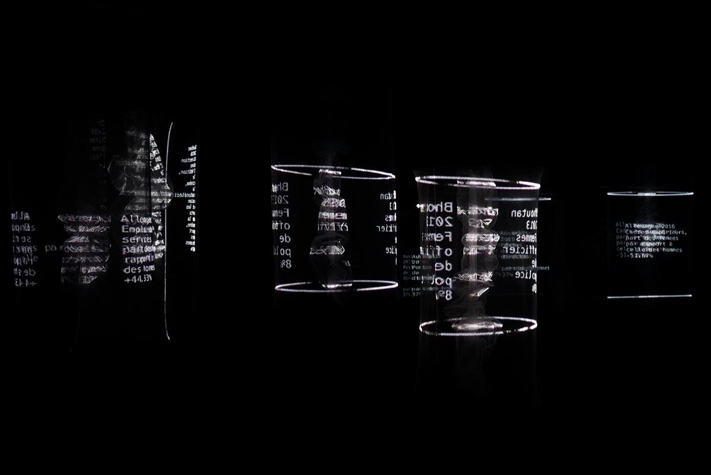
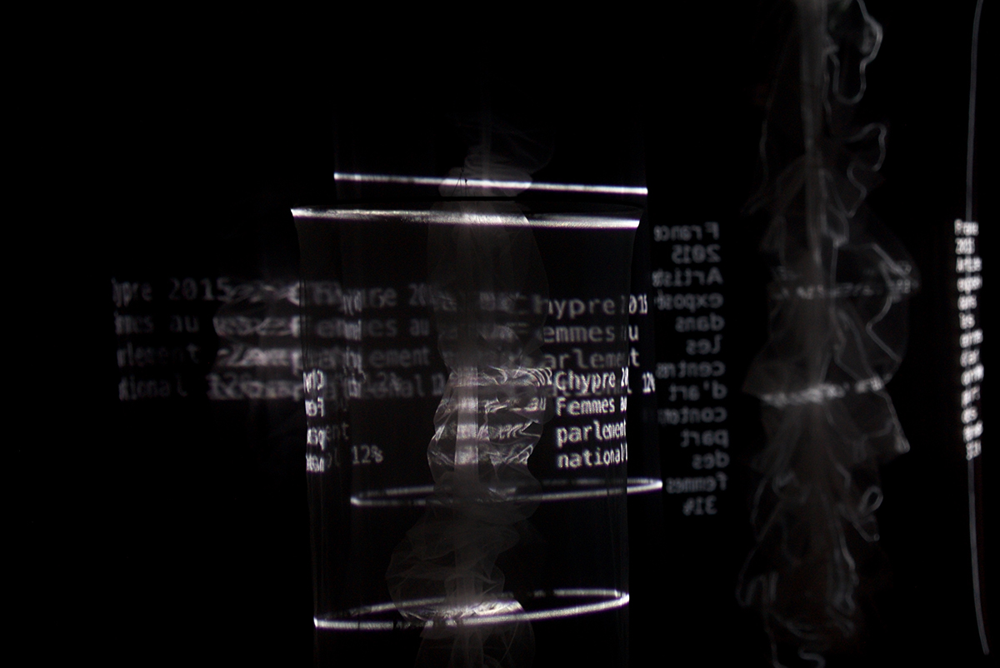
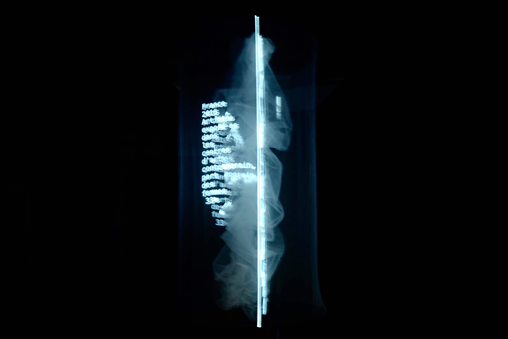

<div class='container'>
    <div id="works">
        <div class="row">
            <div class="col-9">
                <div class="content-container">
                    <h2>MURS INVISIBLES</h2>
                    <p>avec <a href="http://algk.ovh/" target="blank">Alice Guerlot-Kourouklis</a> et Aneymone Wilhelm - <a href="http://iakeri.fr" target="blank">Collectif Iakeri</a></p>
                    <br>
                    <p>Tul, 4 projecteurs, 4 enceintes, 25'</p>
                    <p>Production Iakeri project / Collectif IAKERI</p>
                    <p>Creation 2019 en collaboration avec <a href="https://chateauephemere.org/">Château Éphémère</a> (France), <a href="https://www.stereolux.org/">Stereolux</a> (France), <a href="https://easternbloc.ca/en"> Eastern Bloc</a>  (Canada),
                        <a href="https://www.valdoise.fr/2013-abbaye-de-maubuisson.htm">Abbaye de Maubuisson, centre d'Art Contemporain</a> (France), l'<a href="https://inagrm.com/en" target="blank">INA-GRM / GRM-Tools</a> (France).</p>
                    <p><a href="https://drive.google.com/open?id=1zAupC74AfvAt1KrIYiPokLsBDuDUxII  o" target="blank">Dossier artistique | Fiche technique | Plan d'implantation</a></p>
                    <p><a href="https://vimeo.com/393030000" target="blank">5' film documentaire</a></p>
                    <br>
                    <br>
                    <ul>
                        <li>  
                            <div class="video">
                                <iframe id="player" type="text/html" allow="autoplay" width="400" height="250" src="https://www.youtube.com/embed/vZpHjzRMWYc?enablejsapi=1"  frameborder="0" allowfullscreen></iframe>
                                <p>Teaser</p>
                            </div>                        
                        </li>
                        <li> 
                            <div class="video">
                                <audio controls loop='true' class="audio_player" preload="auto" type="audio/wav">
                                    <source src="../sounds/Murs-Invisibles-Collectif-Iakeri-Tableau-3-Violence-minutes-6-to-8.wav"/>
                                </audio>
                                <p>Extract sonore</p>
                            </div>
                        </li>
                    </ul>
                    <br>
                    <br>
                    <p>MURS INVISIBLES est une installation sonore et visuelle qui se propose d'offrir une perception des inégalités femmes-hommes par l'immersion dans un espace où la matière et le son sont révélés, sculptés et distordus par des statistiques.
                    <br>
                    <br>
                    MURS INVISIBLES aborde les data et les questions qu'elles soulèvent sous un prisme bien particulier : les données utilisées dans l'oeuvre sont en accès libre, mais c'est la réalité qu'elles disent, son ampleur, qui ne sont pas toujours visibles. Il s'agit là de les donner à voir et à entendre dans une installation dont la dramaturgie et la spatialisation sonore et visuelle interroge la volonté du public de savoir.
                    <br>
                    <br>                            
                    Rencontre entre l'art plastique et visuel, les mathématiques, l'informatique, la sociologie et la musique expérimentale, elle aborde la problématique selon laquelle le dispositif scénographique peut produire un contexte de saisie de faits sociaux et politiques. Lorsque l'on étudie les statistiques sur les inégalités de genre, les «gender data», en France comme dans le monde entier, c'est avant tout à des écarts que l'on a affaire, bien souvent de grands écarts, et qui sont toujours, presque sans exception, à la défaveur des femmes. C'est sous le prisme de ces écarts défavorables aux femmes, et à partir des données chiffrées de ces derniers, que le Collectif IAKERI a choisi d'aborder les inégalités entre hommes et femmes.
                    <br>
                    <br>
                    La création trouve son origine dans la volonté de travailler à une traduction sonore d'un fait social par le biais de l'utilisation de données, tout en veillant à la cohérence entre la forme donnée et le sujet abordé. L'installation prend son inspiration formelle dans la réalité sociale même qu'elle entend représenter, par le biais d'un travail de sculpture des matières provoqué par les data, afin de rendre compte de la manière dont ces inégalités viennent elles-mêmes opérer des reliefs, des creux, des formes d'organisation et de pouvoir dans les sociétés.
                    <br>
                    <br>
                    La dramaturgie, composée de trois partitions (visuelle - sonore - lisible), prend comme fil conducteur une réflexion sur la manière dont le spectateur va se saisir de ces données après en avoir été saisi. Aucune action n'est arbitraire, il n'y a pas d'aléatoire, l'écriture numérique et les outils techniques ne sont là que pour porter un point de vue, celui porté par trois femmes aux parcours distincts, dont la mutualisation et l'échange des savoirs et savoirs-faire ont rendu possible l'émergence de cette oeuvre hybride. Les auteures s'emparent des outils et représentations numériques pour aborder des problématiques politiques..</p>
                    <br>
                    <br>
                    
                    
                    
                    
                    <br>
                    <br>
                </div>
            </div>
        </div>
    </div>
</div>